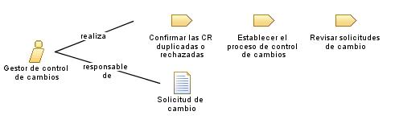

| Rol: Gestor de control de cambios |
 |
|
 |
|
| Modifica | |
|---|---|
| Uso del proceso | |
| Habilidades |
La persona que desempeña el rol de gestor de control de cambios debe comprender los principios de gestión de la configuración. Deben tener experiencia en la estimación del coste y los impactos de la planificación de las solicitudes de cambio. Deben poder comunicar de forma efectiva para negociar los cambios de ámbito y para determinar cómo debe manejarse cada solicitud de cambio y quién debe manejarla. |
|---|---|
| Propuestas de asignación |
Este rol se suele compartir con un comité de control (CCB) de configuración (o cambio) y consta de representantes de todas las partes interesadas, incluidos clientes, desarrolladores y usuarios. En un proyecto más pequeño, un único miembro del equipo, como el gestor de proyectos o el arquitecto de software, puede desempeñar este rol. |
© Copyright IBM Corp. 1987, 2006. Reservados todos los derechos. |